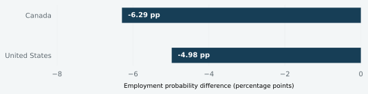

About Me
I am currently pursuing a Master of Management in Analytics (MMA) at McGill University, with a background in Economics. I am interested in using data and consumer insights to understand audience behaviour, market trends, and business decision-making, particularly in the media, music, and entertainment industries.
Education
McGill University
Master of Management in Analytics
Queen’s University
Bachelor of Arts in Economics
National Taiwan University
International Academic Exchange
Career Goals
I am interested in opportunities related to consumer insights, audience analytics, market research, business intelligence, and strategy. I hope to work at the intersection of data, business, and consumer behaviour, particularly within media and entertainment, rather than in a purely technical analytics role.
Skills
Analytics: Python · SQL · Excel · Statistical Analysis · Regression Analysis · Optimization
Business & Research: Business Intelligence · Quantitative Research · Market Analysis · Data-driven Decision Making · Client Communication
Selected Projects
A selection of projects across data analytics, business strategy and research.
Perfect Pair
AI-assisted retail returns connecting customer needs with inventory, merchandising and business value.
Read the case study →
Motherhood, Employment & Wages
Comparing employment and wage patterns in Canada and the U.S., with attention to measurement and sample selection.
Read the case studyperformance→Policy
context
Corporate Valuation & Policy Analysis
Financial-data analysis and assessment of subsidy and tax-rebate eligibility to support valuation work.
View related experienceBusiness Intelligence Analyst
Academic Analytics Consulting Project with CN Rail
Contributing to a client-based analytics project and supporting the development of data-driven reporting and decision-making solutions.
Teaching Assistant, ECON 110/111
Queen’s University – Department of Economics
Conducted weekly office hours to support undergraduate students with course concepts and problem-solving, and graded coursework with feedback on analytical errors and problem-solving approaches.
Research and Valuation Intern
Guorongxinghua (Hubei) Assets Appraisal Co., Ltd.
Conducted financial analysis, valuation, market data analysis, and policy evaluation to support valuation and investment-related recommendations.
Client Services and Operations Intern
China Minsheng Bank Corp., Ltd.
Supported corporate clients through financial needs analysis, banking operations, and customized financial service solutions.
Audit and Accounting Intern
ShineWing Certified Public Accountants LLP
Analyzed financial statements and accounting records and supported audit, tax documentation, and financial reporting processes.